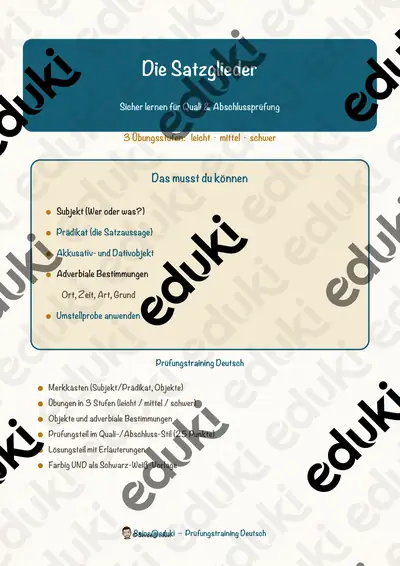
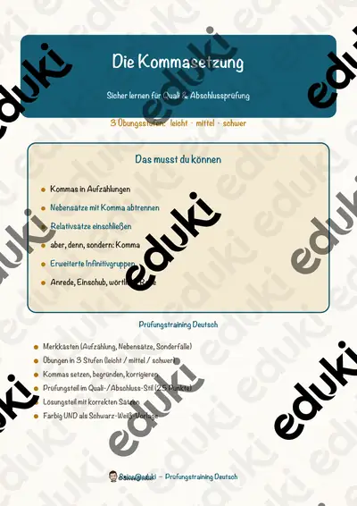
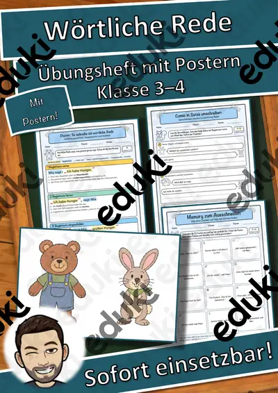

Satzglieder und Satzbau: Arbeitsblätter für Klasse 4–8 (Deutsch)
Satzbau und Zeichensetzung gehören ab Klasse 4 zum Deutschunterricht. Die Lernenden erkennen Subjekt, Prädikat und Objekte, bilden Haupt- und Nebensätze und setzen Kommas.
Zum Themenkern zählen Prädikat, Subjekt und Objekt. Als Vertiefung bieten sich Hauptsatz und Nebensatz und wörtliche Rede an, am Ende steht oft Kommaregeln.
Wo genau im Lehrplan das Thema steht, unterscheidet sich von Land zu Land, häufig im Fach Deutsch in den Klassen 4 bis 8. Gemeinsames Ziel: die Schülerinnen und Schüler bestimmen Satzglieder mit der Umstellprobe und setzen Satzzeichen.
Für den Einstieg in Satzglieder und Satzbau bieten sich Aufgaben zu Prädikat an, zum Üben solche zu Subjekt und Objekt, zur Wiederholung vor einer Lernkontrolle ein Blick auf Kommaregeln. Die Lösungen liegen bei, sodass im Unterricht niemand nachschlagen muss. Die Prüfungstrainings bereiten gezielt auf Klassenarbeiten und Abschlussprüfungen vor.
Die Auswahl zum Thema umfasst derzeit 11 Titel, zum Beispiel Wörtliche Rede sicher beherrschen, Satzglieder und Wörtliche Rede. Dazu zählen 2 Prüfungstrainings für Klasse 3–8. Ein Satz auf Papierstreifen, den die Kinder umlegen, macht die Umstellprobe haptisch.
Das gehört zum Thema
Passende Arbeitsblätter und Materialpakete

Die Satzglieder – Prüfungstraining Deutsch (Klasse 8)

Die Kommasetzung – Prüfungstraining Deutsch (Klasse 8)

Wörtliche Rede sicher beherrschen

Satzglieder – Übungsheft mit Postern, Umstellprobe, Fragen und Satz-Baukasten Kl. 3–4

Wörtliche Rede – Übungsheft mit Postern, Redebegleitsätzen und Comic-Dialogen Kl. 3–4

Prädikat und Satzklammer – Präsentation mit Tafelbild (Klasse 5)

Das Prädikat erkennen – Merkposter (Klasse 5)

Prädikate in verschiedenen Zeitformen – Merkposter (Klasse 6)

Das Prädikat erkennen – Präsentation mit Tafelbild (Klasse 5)

Das zweiteilige Prädikat – Merkposter (Klasse 5)

Prädikate in verschiedenen Personalformen – Merkposter (Klasse 5)
Häufige Fragen
Für welche Klassenstufe passen die Arbeitsblätter zu Satzglieder und Satzbau?
Die 11 Materialien zu diesem Thema sind für Klasse 3–8 ausgelegt, die meisten davon für Klasse 5. Einzelne Titel lassen sich mit Anpassung auch eine Stufe darunter oder darüber einsetzen.
Welche Inhalte decken die Materialien zu Satzglieder und Satzbau ab?
Die Materialien arbeiten an Prädikat, Subjekt und Objekt und gehen dann weiter zu Hauptsatz und Nebensatz, wörtliche Rede und Kommaregeln. Vorab lohnt ein Blick in den Lehrplan des eigenen Bundeslandes.
Wie setze ich Satzglieder und Satzbau im Unterricht ein?
Beginnen Sie mit einem Einstieg zu Prädikat und ergänzen Sie nach Bedarf. Ein Satz auf Papierstreifen, den die Kinder umlegen, macht die Umstellprobe haptisch.
Mehr Material nach Fach und Klasse
- Alle Materialien Deutsch
- Arbeitsblätter Deutsch Klasse 4
- Arbeitsblätter Deutsch Klasse 5
- Arbeitsblätter Deutsch Klasse 6
- Arbeitsblätter Deutsch Klasse 7
- Arbeitsblätter Deutsch Klasse 8
- Unterrichtsmaterial Klasse 4
- Unterrichtsmaterial Klasse 5
- Unterrichtsmaterial Klasse 6
- Unterrichtsmaterial Klasse 7
- Unterrichtsmaterial Klasse 8
Verwandte Lehrplanthemen
- Gedichte und Balladen (Deutsch, Klasse 3–10)
- Vorgangsbeschreibung (Deutsch, Klasse 5–8)
- Bewerbung und Praktikum (Deutsch, Klasse 8–10)
- Literatur: Kurzgeschichte, Roman und Jugendbuch (Deutsch, Klasse 7–10)
- Lesen und Leseverstehen (Deutsch, Klasse 1–6)